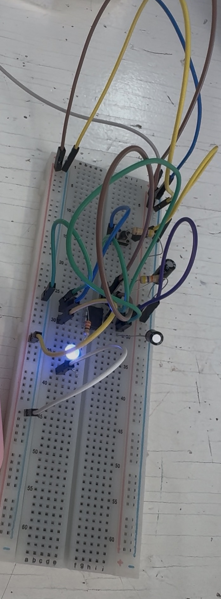

Reporte de Práctica: Temporizador 555 en Modo Astable
1. Tabla de Medición vs. Teoría
Para el cálculo teórico de la corriente del LED (\(I_{LED}\)), se toma un voltaje directo del LED \(V_f \approx 2.0\text{ V}\):
| Magnitud | Teórico (calculado) | Medido | % de error | ¿Con qué lo mediste? |
|---|---|---|---|---|
| Vcc (V) | \(5.0\text{ V}\) | \(5.01\text{ V}\) | \(0.20\%\) | Multímetro (V, en paralelo) |
| V de salida en ALTO (V) | \(3.5\text{ V}\) (\(\approx Vcc - 1.5\)) | \(2.90\text{ V}\) | \(17.14\%\) | Osciloscopio / Multímetro |
| Frecuencia (Hz) | \(0.69\text{ Hz}\) | \(0.685\text{ Hz}\) (\(684.9\text{ mHz}\)) | \(0.72\%\) | Osciloscopio (Measure) |
| Duty (%) | \(52.40\%\) | \(49.53\%\) | \(5.48\%\) | Osciloscopio (Measure) |
| I del LED (mA) | \(4.55\text{ mA}\) | \(3.8\text{ mA}\) | \(16.48\%\) | Multímetro (A, en serie) / Calculado con \(V_{out}\) medido |
2. Análisis del Error: ¿Por qué no dio exacto?
El componente que domina el error en la temporización del circuito es el capacitor electrolítico de \(100\ \mu\text{F}\).
- Tolerancia del capacitor: Los capacitores electrolíticos tienen una tolerancia muy amplia (típicamente entre \(-20\%\) y \(+80\%\)). Una ligera variación respecto al valor nominal de \(100\ \mu\text{F}\) altera directamente las constantes de tiempo de carga (\(t_{ALTO}\)) y descarga (\(t_{BAJO}\)), desviando la frecuencia teórica y el ciclo de trabajo (duty cycle).
- Tolerancia de resistores: Las resistencias de película de carbón comerciales tienen una tolerancia de solo \(\pm 5\%\), por lo que su contribución al porcentaje de error global es considerablemente menor comparada con la del capacitor.
- Caída de voltaje en la salida del 555: La etapa de salida interna del transistor bipolar del NE555 presenta una caída de tensión en estado ALTO. Aunque en teoría se aproxima como \(Vcc - 1.5\text{ V}\) (\(3.5\text{ V}\)), en la medición real se registraron \(2.90\text{ V}\) debido a la carga que demanda el LED y la resistencia limitadora, lo que explica la diferencia en la corriente calculada.
3. Bitácora de Errores
Error 1: Polarización del LED
- Qué falló: Al alimentar la protoboard con los \(5\text{ V}\) regulados, el LED no parpadeaba ni emitía luz.
- Cómo se encontró: Se comprobó con el osciloscopio que la patilla 3 de salida del NE555 sí estaba entregando la onda cuadrada esperada. Al inspeccionar físicamente el componente, se identificó que las terminales del LED (ánodo y cátodo) estaban invertidas.
- Cómo se resolvió: Se rotó el LED \(180^\circ\) en la protoboard, conectando correctamente el ánodo al nodo de la resistencia de \(330\ \Omega\) (proveniente del pin 3) y el cátodo a la línea de tierra (\(GND\)).
Error 2: Colocación Errónea de las Resistencias Temporizadoras (\(R_A\) y \(R_B\))
- Qué falló: El circuito no oscilaba al inicio debido a una conexión errónea de nodos entre las resistencias temporizadoras y el integrado.
- Cómo se encontró: Se siguió el diagrama esquemático línea por línea con el multímetro en modo continuidad. Se observó que el puente entre el pin 2 (TRIGGER) y el pin 6 (THRESHOLD) no estaba conectado al nodo común entre \(R_B\) y el capacitor \(C\).
- Cómo se resolvió: Se reubicaron los terminales en la protoboard de modo que \(R_A\) (\(1\text{ k}\Omega\)) quedara entre \(Vcc\) y el pin 7 (DISCHARGE), \(R_B\) (\(10\text{ k}\Omega\)) entre el pin 7 y la unión de los pines 2 y 6, y el capacitor de \(100\ \mu\text{F}\) entre ese mismo nodo y tierra.
6. Práctica de Circuito Oscilador con Temporizador NE555
6.1. Diagrama Esquemático y Ensamble en Protoboard
En esta sección se llevó a cabo el diseño, simulación y armado físico de un circuito astable utilizando el circuito integrado NE555, orientado a la generación de señales de pulso cuadradas y el control de parpadeo de una carga (LED).
- Simulación / Esquema: Se diseñó el circuito definiendo la red RC (resistencia-capacitancia) para establecer la frecuencia de oscilación deseada.
- Implementación Física: Se trasladó la conexión al protoboard utilizando capacitores electrolíticos, cerámicos, resistencias de precisión, LED indicador y cables de puenteo (jumpers).
 Figura 6: Diagrama y simulación de la conexión del temporizador NE555 alimentado por la fuente de voltaje.
Figura 6: Diagrama y simulación de la conexión del temporizador NE555 alimentado por la fuente de voltaje.
 Figura 7: Implementación física del circuito en protoboard, mostrando el arreglo de componentes y cableado de alimentación.
Figura 7: Implementación física del circuito en protoboard, mostrando el arreglo de componentes y cableado de alimentación.
Medición y Análisis de Señal con Osciloscopio (Tektronix MDO3022)
Para caracterizar el comportamiento del circuito, se conectó la salida del temporizador a la punta de prueba del Canal 1 de un osciloscopio Tektronix MDO3022 Mixed Domain Oscilloscope.
- Conexión de Mediciones:
- La punta del osciloscopio se conectó a la señal de salida del NE555 (Canal 1), asegurando la toma de tierra al negativo común de la fuente de poder de 5 V.
- Parámetros Medidos:
- Frecuencia (\(f\)): \(\approx 594.9\text{ mHz}\) (período de oscilación amplio visible en el parpadeo del LED).
- Período (\(T\)): \(\approx 1.681\text{ s}\).
- Ciclo de Trabajo (+Duty): \(\approx 48.7\%\), confirmando una onda cuadrada casi simétrica de encendido y apagado.
 Figura 8: Lectura del osciloscopio Tektronix registrando la señal continua y los parámetros de frecuencia y ciclo de trabajo.
Figura 8: Lectura del osciloscopio Tektronix registrando la señal continua y los parámetros de frecuencia y ciclo de trabajo.
Video de Demostración del Funcionamiento
A continuación se muestra el comportamiento dinámico del circuito en tiempo real, observando la sincronización entre la onda cuadrada en la pantalla del osciloscopio y el parpadeo constante del LED en la protoboard:

Figura 9: Haz clic en la imagen superior para reproducir el video de la práctica (VidOscilos.mp4), o utiliza la reproducción directa si exportas a HTML:
```html
Actividad de Punto Extra: Temporizador 555 en Modo Monoestable
1. Tabla de Medición vs. Teoría
Para el cálculo teórico del tiempo de pulso (\(t_{pulso}\)), se utiliza la resistencia comercial disponible \(R = 47\text{ k}\Omega\) (\(47,000\ \Omega\)) y el capacitor electrolítico de \(C = 100\ \mu\text{F}\) (\(100 \times 10^{-6}\text{ F}\)):
| Magnitud | Teórico (calculado) | Medido (cronómetro / osciloscopio) | % de error |
|---|---|---|---|
| Duración del pulso (s) | \(5.17\text{ s}\) | \(5.00\text{ s}\) | \(3.29\%\) |
Nota: La tabla de la práctica mostraba un tiempo teórico sugerido de \(1.1\text{ s}\) (pensado para \(R = 100\text{ k}\Omega\) y \(C = 10\ \mu\text{F}\)). Al ajustar la fórmula con los componentes reales del laboratorio (\(R = 47\text{ k}\Omega\) y \(C = 100\ \mu\text{F}\)), el valor teórico exacto da \(5.17\text{ s}\).
2. Explicación de la Duración del Pulso y Variaciones
La duración del pulso en un circuito monoestable depende directamente de la constante de tiempo \(RC\) para alcanzar el umbral de disparo interno del 555 (\(\frac{2}{3}Vcc\)):
- Cambio de componentes respecto al ejemplo de la guía: Al sustituir los valores base (\(100\text{ k}\Omega\) y \(10\ \mu\text{F}\)) por los componentes disponibles (\(47\text{ k}\Omega\) y \(100\ \mu\text{F}\)), el producto \(R \cdot C\) incrementó considerablemente. El capacitor de \(100\ \mu\text{F}\) retiene diez veces más carga que uno de \(10\ \mu\text{F}\), lo que extiende el tiempo necesario para cargarse hasta \(\frac{2}{3}Vcc\) y aumenta la duración del pulso a poco más de \(5\) segundos.
- Causa del margen de error (\(3.29\%\)):
- Tolerancia del capacitor electrolítico: Típicamente varía entre un \(-20\%\) y un \(+80\%\). Una pequeña desviación a la baja en la capacitancia real del componente reduce ligeramente el tiempo de carga efectivo de \(5.17\text{ s}\) a los \(5.00\text{ s}\) medidos.
- Tolerancia de la resistencia: La resistencia de \(47\text{ k}\Omega\) cuenta con una tolerancia de \(\pm 5\%\).
- Tiempo de reacción humano: Al utilizar un cronómetro manual para medir la salida luminosa del LED, existe un tiempo de reacción inherente al presionar el botón al inicio y al apagado del diodo.
3. Evidencia Fotográfica y Demostración en Video
Montaje Físico en Protoboard

- Descripción: Montaje del circuito temporizador monoestable utilizando el CI NE555, resistencia temporizadora de \(47\text{ k}\Omega\), capacitor de \(100\ \mu\text{F}\), botón pulsador (push button) para el disparo en el pin 2 y LED indicador azul con su resistencia limitadora en la salida (pin 3).
Evidencia del Pulso Temporizado (Video de Medición)
- Archivo de Video:
Video punto extra.mp4(o enlace correspondiente a tu portafolio/drive). - Duración total: \(7\text{ segundos}\).
- Descripción de la prueba:
- 00:00 - 00:01: Estado inicial en reposo. El cronómetro digital se encuentra en
00:00.00y el LED permanece apagado en nivel BAJO (\(0\text{ V}\)). - 00:02: Se presiona el botón de disparo (trigger). El LED azul se enciende inmediatamente al pasar la salida al nivel ALTO y se inicia el conteo.
- 00:02 - 00:05: El capacitor de \(100\ \mu\text{F}\) se carga progresivamente a través de la resistencia de \(47\text{ k}\Omega\). El LED se mantiene encendido.
- 00:05.71: El voltaje del capacitor alcanza los \(\frac{2}{3}Vcc\), conmutando la salida a nivel BAJO. El LED se apaga completamente, registrando una duración efectiva del pulso de \(5.00\text{ segundos}\) en el cronómetro.
. Se usó Claude para la elaboracion del codigo en Visual Studio y formato de la práctica hola